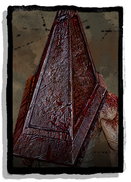

| Player | Strength | Killer Of Choice | Preferred Survivors | Biggest Weakness (Survivor) | Biggest Weakness (Killer) |
|---|---|---|---|---|---|
| Orion | Skill Checks (Healing & Gens) | The Executioner  | Dwight Fairfield | Evasion/Running | Easily Tilted |
| Chroma9 | Corner Ducking (Evasion) | The Trapper (Now Available At Walgreens) | Leon S. Kennedy/James Sunderland | Skill Checks | Tracking (Ability to keep tabs on a survivor) |
| Inkwell | Killer Annoyance (Running) | The Ghost Face (Ghost Face) | Blendette Morel | Survivability (Can Run loops, but if no loops to run, is dead man) | Observation (Is easily tricked or lost) |
| UndeadHunter365 | - | The Hillbilly (Hillbilly) | Blendette Morel | Running/Evasion | - |
| KarmaBytes | Teammate Sacrifice (Brainless Panic) | The Legion (Legion) | Jake Park | Panics (Fair chance of poor choice making due to panic of being caught) | Moral Unravelling (You think Orion's competitive, this guy is no holds barred even to the point of toxicity) |